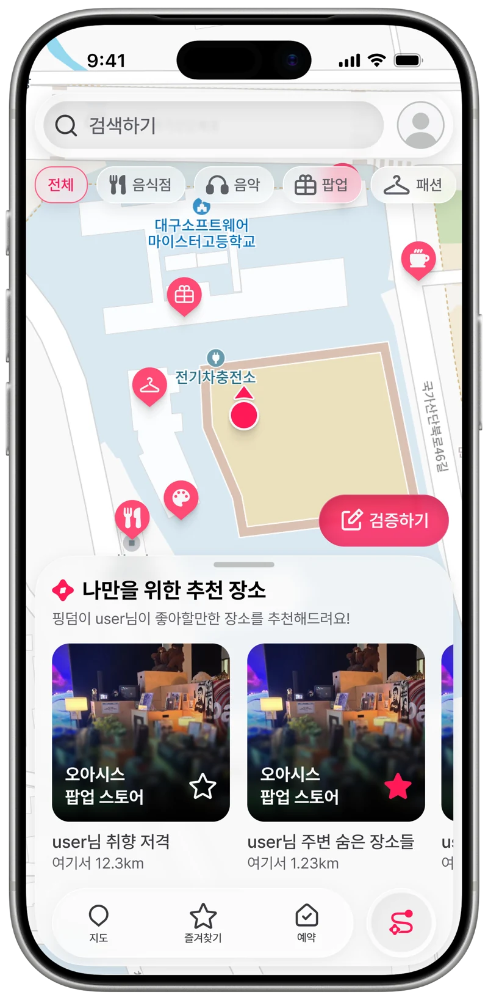
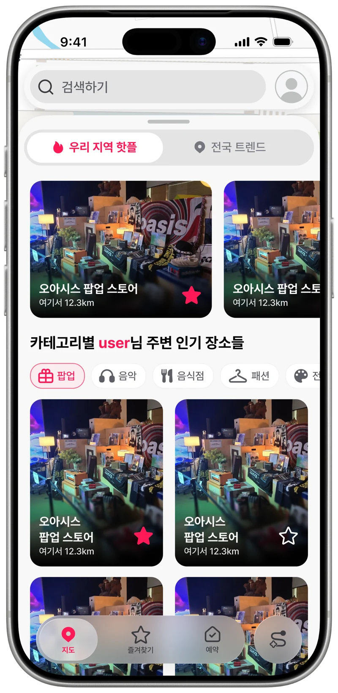

한국에서갈 곳을더 쉽게.
방한 여행자와 로컬을 잇는
발견부터 방문까지, 핑덤.
여행의 설렘 앞에,
벽이 없도록.
마음이 가는 곳에,
발걸음이 닿도록.
취향이 이끄는
새로운 발견.
지금 내 주변, 나에게 맞는 장소.


믿을 수 있는 정보는,
확인에서 시작됩니다.
상점주가 전한 정보에
방문자의 현장 경험을 더합니다.
PINGDOM VERIFIED
핑덤 검증
방문자 확인과 이용 기록을 종합해
신뢰도 높은 정보를 구분합니다.
로컬의 운영도,
더 명확하게.
내 가게를 관리하는 한 곳.
매장 정보 · 쿠폰 · 예약
AI
찾고 싶은 곳을,
말하는 대로.
위치, 평점, 영업 여부.
여러 조건을 한 번의 질문으로.
기능 예시지금 갈 수 있는 곳을
내 주변에 평점이 4.8점 이상이고
지금 영업 중인 음식점을 찾아줘.
지금 갈 수 있는 곳을
함께 찾아볼까요?
위치내 주변
평점4.8+
영업 상태영업 중
원하는 조건에 맞춰, 장소 탐색을 더 간편하게.
함께 만드는,
핑덤.

PM · Server Lead · Web
김우성
핑덤을 직접 기획하고,
서비스의 방향과 개발을 이끕니다.
- 기획서비스 기획 · 프로젝트 진행
- 서버서버 개발 총괄
- 웹상점주 웹 개발